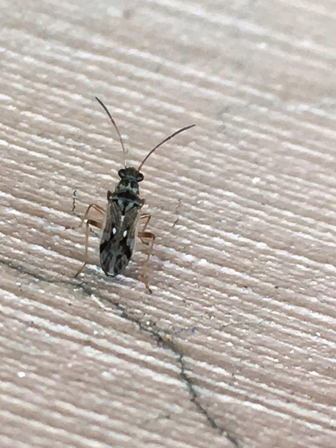

चित्तीदार डर्ट बगSpotted Dirt Bug
Pseudopachybrachius guttus · Rhyparochromidae · INS-0220

- Scientific name वैज्ञानिक नाम
- Pseudopachybrachius guttus (Dallas, 1852)
- Family कुल
- Rhyparochromidae
- Hindi हिंदी
- चित्तीदार डर्ट बग
- Local names स्थानीय नाम
- spotted dirt bug, pseudopachybrachius guttus, pachybrachius guttus, ground seed bug
- Status here यहाँ की स्थिति
- native
- Movement आवागमन
- Resident, here all year
- Known from कहाँ दर्ज
- Others have published records from the wider Awadh–Purvanchal plain, none yet from Basti–Ayodhya अवध–पूर्वांचल से दूसरों के प्रकाशित अभिलेख, बस्ती–अयोध्या से अभी नहीं
- IUCN IUCN
- not evaluated
- Review समीक्षा
- not yet reviewed
When to look कब देखें
Present all year. साल भर मौजूद।
Tell it apart from इनसे अलग पहचानें
चित्तीदार डर्ट बग / Spotted Dirt Bug
Pseudopachybrachius guttus (Dallas, 1852) — Rhyparochromidae
चित्तीदार डर्ट बग — खेतों की सूखी घास, गिरी हुई पत्तियों और मेड़ों की नम मिट्टी में छिपकर रहने वाला एक छोटा, फुर्तीला, गहरे भूरे रंग का जमीनी कीड़ा। इसकी अगली टांगें बहुत मोटी और नीचे से कांटेदार होती हैं, जिनसे यह गिरी हुई बीजों को पकड़ता है। इसके गहरे कत्थई पंखों पर सफेद और हल्के पीले रंग की नन्हीं चमकदार चित्तियां होती हैं। यह जमीन पर बहुत तेजी से दौड़ता है।
Quick Identification त्वरित पहचान
| Feature | Description |
|---|---|
| Habit | Small, elongate, dark ground-dwelling seed bug 3–4 mm long (Distant 1904) |
| Forelegs | Profemora strongly swollen, incrassate, armed beneath with sharp spines (Dallas 1852) |
| Coloration | Dark piceous-brown to blackish with pale ochraceous wing markings (Distant 1904) |
| Pronotum | Distinctly constricted behind the middle, forming two distinct lobes (Dallas 1852) |
| Hemelytra | Dark brown with pale ivory-white or ochraceous spots along costal margin and apex |
| Movement | Rapid cursorial runner, scurrying among loose soil particles and dead leaves |
Field tip: Part fallen straw or dead leaves in grassy field borders to spot tiny dark, fast-running bugs with conspicuously thickened front thighs and white wing spots.
हिंदी — कैसे पहचानें: जमीन पर तेजी से दौड़ने वाला छोटा काला-भूरा कीड़ा, बहुत मोटी और कांटेदार अगली टांगें, और पंखों के किनारों पर बनी सफेद चमकदार बिंदियां।
Morphology शारीरिक संरचना
Measurements as given by Distant (1904):
| Measurement | Value | Source |
|---|---|---|
| Length | 3–4 mm | Distant (1904) |
Exoskeleton and head: Body slender, subcylindrical, dark piceous to dull black, clothed with fine appressed greyish pubescence. Head triangular, exserted, punctate; eyes large, dark reddish-brown; antennae four-segmented, slender, dark brown with pale basal bands on intermediate segments.
Thorax and wings: Pronotum divided by a transverse impression into a subglobose, finely punctate anterior lobe and a wider, flatter, coarsely punctate posterior lobe; humeral angles rounded. Scutellum equilateral, black, punctate, with a slightly raised median carina. Hemelytra complete; clavus punctate in regular rows; corium dark chocolate-brown with a distinct pale ochraceous spot near the middle of the costal margin and a pale triangular patch at the apical angle; membrane smoky-brown with pale veins and an indistinct pale apical spot.
Venter and appendages: Venter dark brown, finely sericeous. Rostrum four-segmented, extending to mesocoxae. Anterior femora conspicuously incrassate, armed along the ventral margin with two or three stout black spines and several minute denticles; anterior tibiae curved; mid and hind legs slender, pale testaceous.
हिंदी: इसका शरीर लंबा और बेलनाकार होता है। छाती बीच से थोड़ी दबी होती है जिससे दो अलग भाग दिखाई देते हैं। अगली टांगें बहुत मजबूत और मोटी होती हैं जिन पर नीचे कांटे होते हैं, जबकि पिछली टांगें पतली होती हैं।
Behaviour & Ecology व्यवहार एवं पारिस्थितिकी
Pseudopachybrachius guttus is a secretive, ground-dwelling seed predator that spends its life concealed within the organic litter layer and surface cracks of alluvial soils. It seldom ascends standing vegetation except during warm humid nights when adults fly to lights.
The insect moves with remarkable agility, running through minute spaces between soil aggregates and dead leaves. The raptorial-like incrassate forelegs are used to grasp and manipulate fallen seeds while the slender rostrum penetrates the seed coat. It feeds on fallen caryopses of grasses and seeds of ruderal weeds, extracting starches and lipids. During the day, it avoids open illuminated ground, seeking shelter under cow dung pats, crop stubble, and fallen dry leaves where humidity remains elevated.
हिंदी: यह कीड़ा जमीन की सतह पर गिरी पत्तियों और मिट्टी की दरारों में छिपकर रहता है। यह धूप से बचता है और जमीन पर पड़े बीजों को अपनी मोटी अगली टांगों से पकड़कर उनका रस पीता है। रात के समय यह कभी-कभी रोशनी की तरफ उड़ता है।
Life Cycle / Phenology जीवन चक्र एवं ऋतुचक्र
| Period | Phenological Event |
|---|---|
| July–August | Monsoonal moisture stimulates rapid breeding and oviposition in moist litter layers |
| September–November | Nymphs develop through five instars among decaying crop residues and grass roots |
| December–February | Adults aggregate under dense straw mulch and dry dung pats to avoid winter chill |
| March–June | Sustained breeding during warm spring months; adults forage actively in shaded litter |
Eggs are deposited singly or in small clusters among leaf litter and root crowns of grasses, hatching within one to two weeks during warm humid conditions.
हिंदी: बरसात के दिनों में नम पत्तियों के बीच यह अंडे देते हैं। क्वार-कार्तिक में इसके बच्चे बड़े होते हैं और जाड़े के दिनों में पुआल और सूखे गोबर के नीचे शरण लेते हैं। गर्मी में यह छायादार जगहों पर सक्रिय रहते हैं।
Host Plants or Prey पोषक पौधे अथवा शिकार
- Fallen Grass Seeds: Forages on fallen caryopses of Doob Grass and seasonal weeds.
- Sedge Achenes: Feeds on mature fallen seeds of Forked Fimbry and damp ditch sedges.
- Crop Residues: Consumes fallen grains in wheat and rice harvest stubbles.
हिंदी: यह जमीन पर गिरे दूब घास, मोथा और फसलों के दानों को खाकर अपना जीवन बिताता है।
Predators / Natural Enemies प्राकृतिक शत्रु
- Ground Beetles: Predatory carabid beetles hunt adults and nymphs through soil crevices.
- Wolf Spiders: Ground-running lycosid spiders ambush bugs moving across bare earth.
- Litter Amphibians: Small skipper frogs and toads consume foraging bugs in damp hollows.
हिंदी: जमीन पर दौड़ने वाली शिकारी मकड़ियां, जमीनी भृंग (गुबरैले), और छोटे मेंढक पत्तियों में इसे खोजकर खा जाते हैं।
Agricultural / Human Relevance कृषि एवं मानवीय उपयोगिता
Ecological Status:
- Harmless litter dweller. Does not attack standing crops, flowers, or fruit; restricted entirely to fallen seeds and organic debris on the soil surface.
- Weed seed regulation. Contributes to natural seed mortality of agricultural weeds by consuming fallen seeds in field margins and fallow plots.
- Soil food web member. Serves as a fundamental prey link converting fallen plant seeds into food for beneficial predatory beetles and ground-foraging birds.
Today. Ubiquitous in agricultural soils, orchard leaf litter, and roadside turf throughout eastern Uttar Pradesh.
हिंदी: यह फसलों को नुकसान नहीं पहुंचाता बल्कि खेतों की मेड़ों पर गिरे खरपतवारों के बीजों को खाकर उन्हें नष्ट करने में मदद करता है। यह मिट्टी के जीवों के लिए भोजन का मुख्य स्रोत है।
Expected Locally स्थानीय संभावना एवं उपस्थिति
Not a field record. Written from published accounts for eastern Uttar Pradesh. No confirmed local sighting yet — if you have seen it, that is what the atlas needs.
अभी तक स्थानीय पुष्टि नहीं। यह विवरण प्रकाशित स्रोतों से है, किसी अवलोकन से नहीं।
Expected in eastern Uttar Pradesh across agricultural crops, orchard groves, riverine scrub, and rural vegetation across Basti, Sant Kabir Nagar, and Ayodhya. GBIF holds published records from the wider Awadh–Purvanchal plain, none yet from Basti–Ayodhya. A first local record would be a dated photograph of the incrassate spined forelegs, constricted pronotum, and spotted hemelytra, submitted with locality details through the project's About page.
Distribution भौगोलिक वितरण
Global range: Widespread across the Indo-Malayan and Australasian regions, from South Asia through Southeast Asia to southern China, Japan, and northern Australia.
In India: Widely distributed throughout the Indo-Gangetic plain, southern India, and the Himalayan foothills (Distant 1904).
In Uttar Pradesh: Recorded across the alluvial plains in cultivated land and grassy waste grounds.
In Basti district / eastern UP: Expected in crop stubbles, garden mulch, and grassy ditch banks.
हिंदी: भारत के गंगा के मैदानों, दक्षिण भारत, चीन और ऑस्ट्रेलिया तक के नम और मैदानी इलाकों में यह कीड़ा पाया जाता है।
Research Questions शोध प्रश्न
- What is the seed consumption rate of Pseudopachybrachius guttus on fallen grass caryopses in Awadh? / अवध के खेतों की मिट्टी पर गिरे घास के बीजों को यह कीड़ा कितनी मात्रा में नष्ट करता है?
- How does mulch thickness affect adult overwintering survival in agricultural field margins? / खेतों की मेड़ों पर पुआल की मोटाई जाड़े में इसके जीवित रहने में कितनी मदद करती है?
- What is the functional morphology of the spined profemora during seed manipulation? — Video recording of foreleg kinematics during seed handling and feeding.
- Does soil moisture content dictate nocturnal flight dispersal to artificial light sources? — Correlate light-trap catches with regional soil moisture indices.
- How does chemical herbicide application impact litter-dwelling dirt bug populations? / क्या खरपतवारनाशक रसायनों के छिड़काव से जमीन पर रहने वाले इन कीड़ों की संख्या घटती है?
Similar Species समान प्रजातियाँ
| Species | How to tell apart | हिंदी |
|---|---|---|
| Dussumier's Seed Bug (Graptostethus servus) | Bright scarlet-red and black; twice as large; forelegs slender, unspined | चमकीला लाल-काला, बड़ा कीड़ा, पतले पैर |
| Black Seed Bug (Pachybrachius luridus) | Pronotum uniformly black; corium without distinct pale white spots | छाती पूरी काली, पंखों पर सफेद बिंदियां नहीं |
| Green Shield Bug (Plautia crossota) | Bright grass-green; shield-shaped; forelegs completely unspined | चमकीला हरा, ढाल जैसा शरीर, बिना कांटे के पैर |
Field rule: Small dark brown ground-dwelling seed bug with conspicuously swollen spined front thighs, constricted two-lobed pronotum, and white spots on the wings identifies Pseudopachybrachius guttus.
Taxonomy & Classification वर्गिकी एवं वर्गीकरण
Original description. Described by William Sweetland Dallas in 1852 as Rhyparochromus guttus in List of the Specimens of Hemipterous Insects in the Collection of the British Museum, part 2, p. 573. Later transferred to Pseudopachybrachius Malipatil.
Subspecies. Monotypic; no subspecific divisions are recognized across its broad Indo-Pacific range.
Family and order placement. Belongs to the dirt-colored seed bug family Rhyparochromidae, subfamily Rhyparochrominae, tribe Myodochini, in the order Hemiptera.
Phylogenetic notes. Characterized by strongly incrassate fore femora armed with ventral spines, constricted pronotum with collar, and specialized seed-feeding habits.
IUCN status rationale. Not evaluated in the master expansion list; it is a widespread, abundant native litter-dwelling insect without conservation threats.
हिंदी: विलियम डलास ने 1852 में इसका वैज्ञानिक विवरण 'राइपरोक्रोमस गटस' नाम से दिया था। बाद में इसे 'स्यूडोपैकीब्रैकियस' वंश में शामिल किया गया। यह राइपरोक्रोमिडी कुल का सदस्य है।
Photo Gallery छायाचित्र दीर्घा
No photos yet — add field photos to media/species/spotted_dirt_bug/ and run node scripts/sync_photos.js.
Photos needed आवश्यक फोटो
- [ ] Adult running on soil or dry leaf litter (मिट्टी या सूखी पत्ती पर दौड़ता हुआ वयस्क कीड़ा)
- [ ] Macro shot showing thickened spined front leg (मोटे कांटेदार अगले पैर का क्लोज-अप)
- [ ] Dorsal view showing constricted pronotum and spotted wings (दो खंडों वाली छाती और चित्तीदार पंखों का चित्र)
References संदर्भ सूची
- Dallas, W.S. (1852). List of the Specimens of Hemipterous Insects in the Collection of the British Museum, part 2, p. 573. British Museum, London.
- Distant, W.L. (1904). The Fauna of British India, including Ceylon and Burma: Rhynchota, vol. 2, p. 53. Taylor and Francis, London.
- Malipatil, M.B. (1978). Revision of the Myodochini (Hemiptera: Lygaeidae) of the Australian region. Australian Journal of Zoology Supplementary Series, 26(56), pp. 1–178.
- Péricart, J. (2001). Family Rhyparochromidae. In Catalogue of the Heteroptera of the Palaearctic Region, vol. 4, pp. 112–220. The Netherlands Entomological Society, Amsterdam.
- Slater, J.A. (1964). A Catalogue of the Lygaeidae of the World, vol. 2, pp. 1205–1210. University of Connecticut, Storrs.
- GBIF Occurrence Data — Pseudopachybrachius guttus (Dallas, 1852), India (2025).
Source file: species/fauna/insects/spotted_dirt_bug.md